主角和居民已恢复原有素材。这一版保留浅色纸面和文字对比、简化的外部参考图场景、小屋内部与既有手绘物件，以及直接结账、料理入口和天色过渡修复。
最终源码检查 257 项通过；导出包针对性复测 102 项通过。
时钟、引导和操作提示使用实色浅纸面。主角恢复原有人物素材。
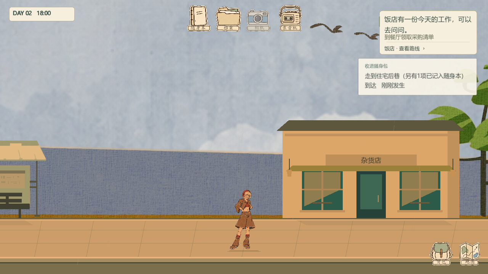
十二位居民保留原来的素材、姓名、关系和交互。
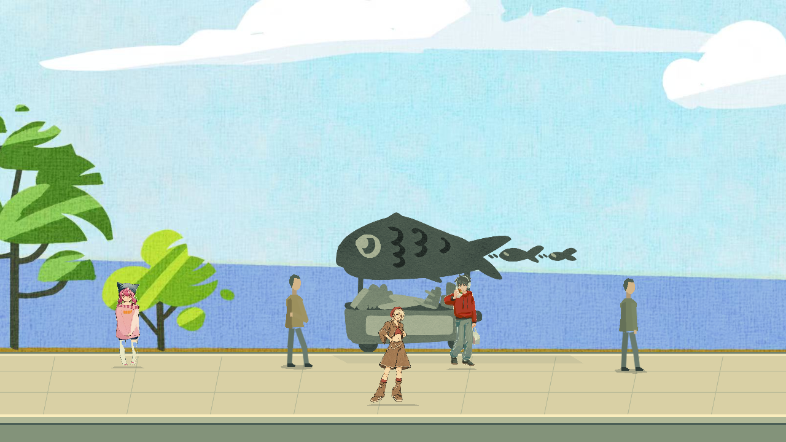
室内美术与原有人物显示保留。
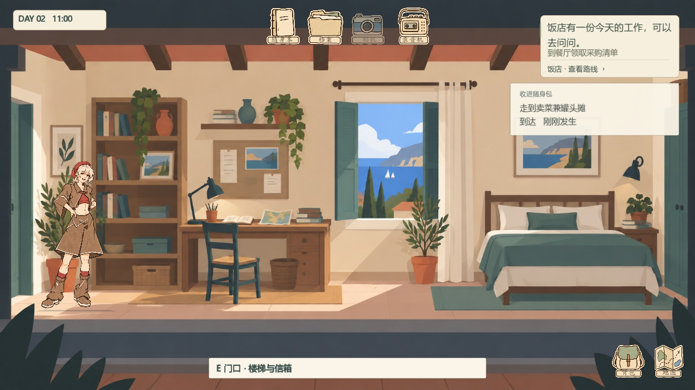
在原有店面与老板对话后购买，不再进入第二套杂货店场景。
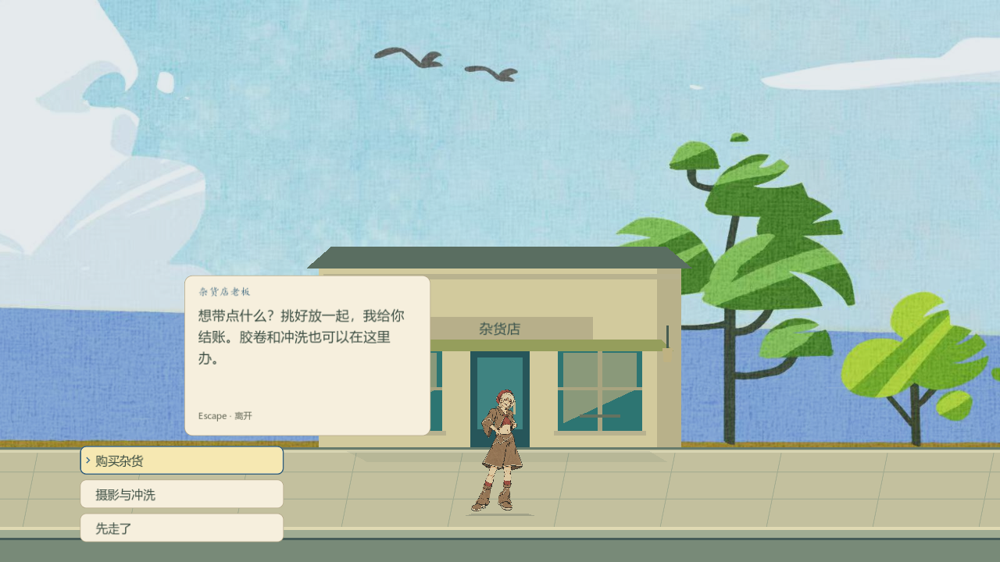
选好商品后直接点击「结账」。购物篮仍可用于修改数量。
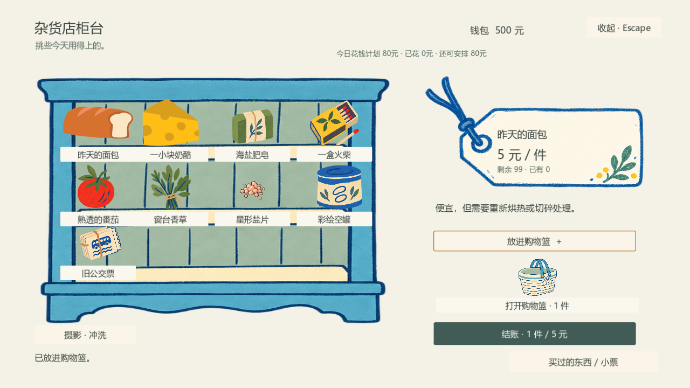
菜摊使用相同结账规则，空篮和余额不足会禁用按钮。
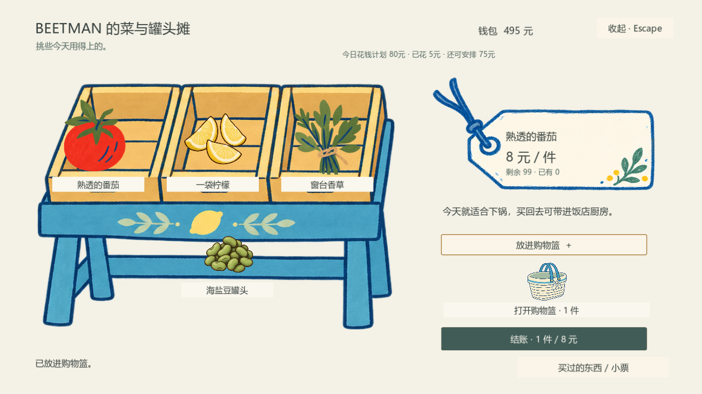
付款只结算一次，物品进入背包，并保留小票。
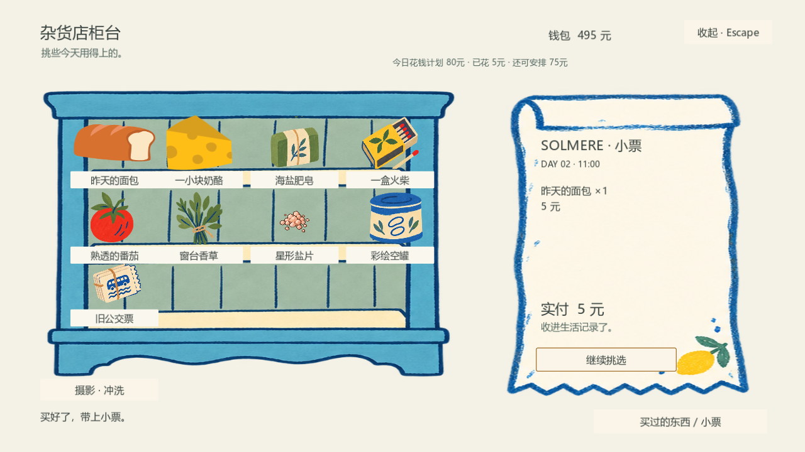
修复重复确认导致无法进入料理的错误，使用一个明确的开始确认。
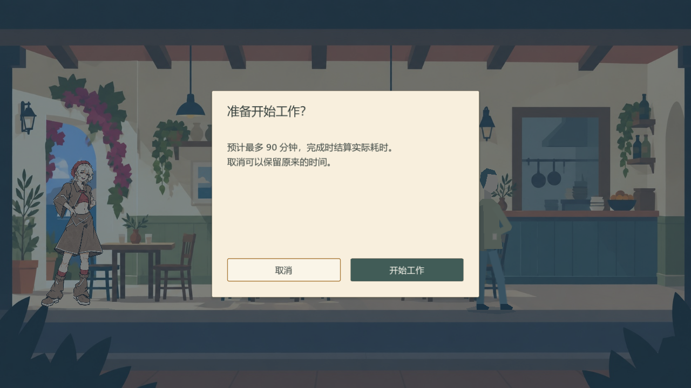
从采购单中的工作入口进入实际料理场景，保留原有备料、切菜和烹饪功能。
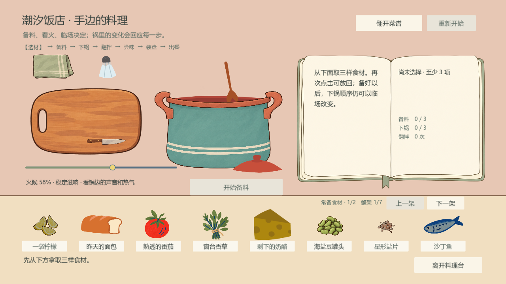
下面四帧来自相同场景。实际时间跳转后，画面沿黄昏、蓝调、夜晚连续过渡。
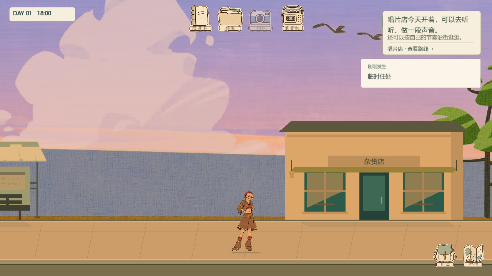
交易时间已经结算，视觉仍从上一帧平滑变化，不会立即闪黑。
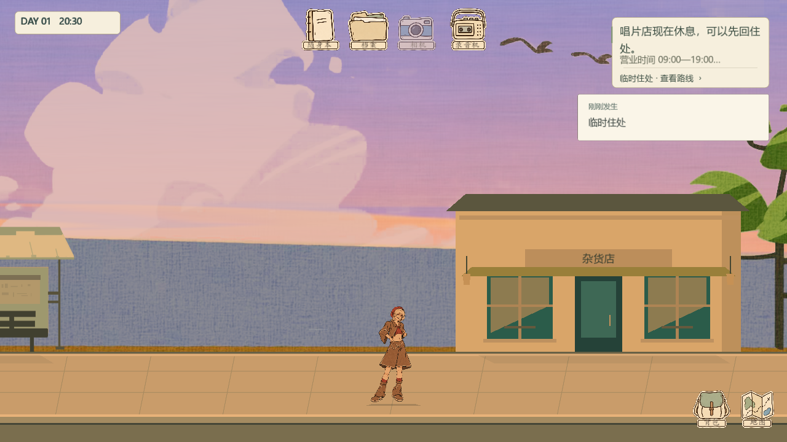
天空、海面、街道和人物使用同一套连续光照参数。
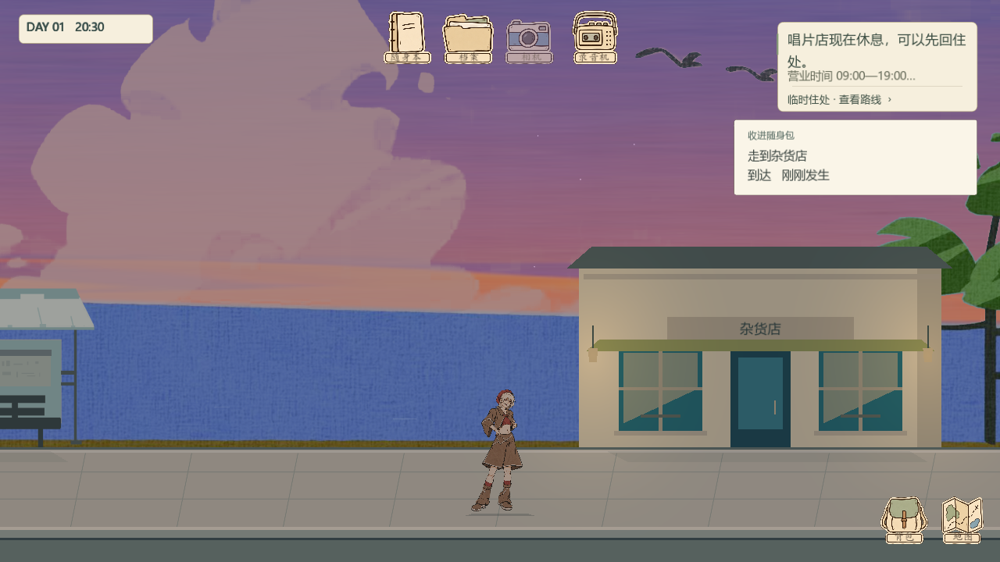
夜空、星光和店面暖光进入夜间状态；天气声也交叉淡入淡出。
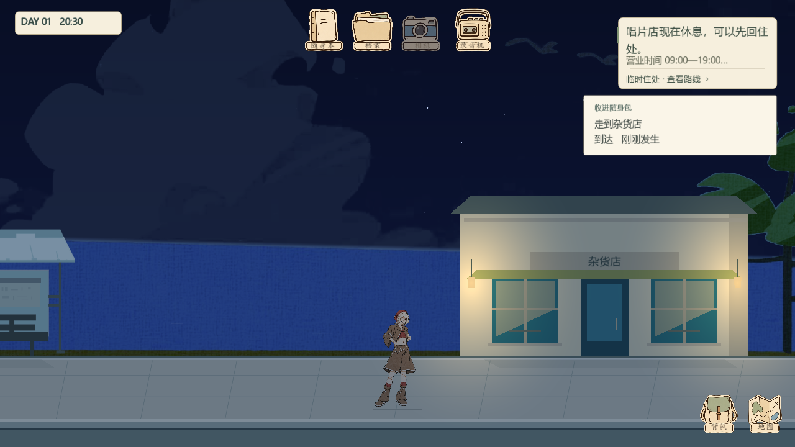